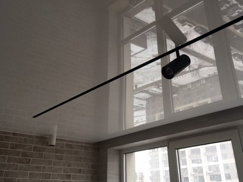
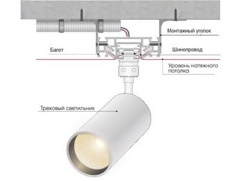
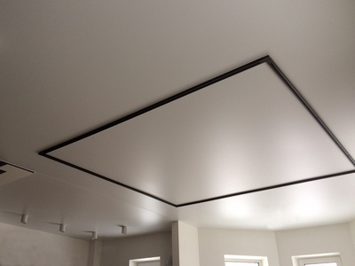

Натяжна стеля з магнітним треком

Зараз рідко можна зустріти натяжну стеля, в якому, крім люстри не було б жодного світильника. Зазвичай ставлять додатково світлодіодні лампи - в ряд, по кутах, або виписують ними вигадливі криволінійні фігури. У цій статті ми розповімо про порівняно нову систему освітлення для натяжних стель, яку ще рідко можна побачити в Києві – трекову системі освітлення. Наша компанія Nova Stelya є, можна сказати, піонером в установці цих систем в столиці.
Що таке трекова система освітлення
Вона включає наступні елементи:
- шино провід − центральна несуча конструкція, через яку підводиться напруга на світильники, встановлені на ньому;
- світильники − освітлювальні прилади, які кріпляться на шинопроводі і їх можна по ньому пересувати;
- блок живлення-пристрій для перетворення змінної напруги 220В в постійне 48В (тільки для світлодіодних ламп).
Як встановлюється трекова система в натяжна стеля

Трекові системи довгий час застосовувалися без установки в натяжні стелі. Їх монтували прямо на базову стелю. Таке освітлення можна зустріти в торгових і офісних приміщеннях, іноді на промислових об'єктах.
У натяжних стелях їх стали застосовувати порівняно недавно. Для цього в ньому створюється ніша за допомогою П-образного багета, до якого можна приєднати натяжна полотно з двох сторін. Багет в потрібному місці кріпиться до базового стелі, до нього підводять дроти, які також кріпляться до стелі. Потім в нього вже встановлюється трекова система − шинопровід і світильники. У фіналі натягується полотно.
Як бачите, трекова система в натяжних стелях дуже схоже на натяжну стеля з «ширяючими лініями». Там теж застосовується П-подібний профіль, в який вставляється світлодіодна стрічка. Тільки вона ще закривається напівпрозорої вставкою, щоб в денний час її не було видно.
Другий варіант − на базовій стелі, на місці кріплення шиноровіда встановлюються заставні (дерев'яні бруски). Після монтажу натяжного полотна до них кріплять шинопровід. Тобто трекова система встановлюється без ніші. Цей варіант за ціною дешевше.
Які бувають трекові системи освітлення

Є дві класифікації - по виду світильників і по конструкції шинопроводів.
По виду світитльників трекова система може бути:
- зі світлодіодними світильниками;
- галогенними світильниками;
- металлогаллогенными світильниками.
Перші використовуються в житлових приміщеннях, другі, в основному, торгових і промислових приміщеннях.
За конструкцією шинопровода трекова система може бути:
- з магнітним шинопроводом-світильники на ньому кріпляться за допомогою магнітного тяжіння;
- з механічним кріпленням-світильники кріпляться і рухаються в напрямних;
Наша компанія Nova Stelya, яка одна з перших стала встановлювати трекові системи в натяжні стелі для житлових приміщень, пропонує своїм клієнтам наступні моделі трекових систем:
- Slot for technolight
- MAYTONI
Трекова система Slot for technolight
Система освітлення зі світлодіодними лампами з напругою 42В. Шинопровід магнітний. Ця модель призначена виключно для установки в натяжна стеля, тому шинопровід являє собою єдине ціле з П-подібним профілем для створення ніші. Колір віно проводу − білий і чорний. Включає великий асортимент світильників для установки (купуються окремо).
Трековая система MAYTONY
Система освітлення зі світлодіодними лампами з механічним кріпленням. Напруга – 220 В. Для установки в натяжну стелю шинопровід встановлюється в профіль LUMFER30. Колір-білий і чорний. Включає великий асортимент світильників для установки (купуються окремо).
Всі ці трекові системи сертифіковані і безпечні в експлуатації.
Переваги трекових систем
- Новизна і ексклюзивність. Трекову систему ще рідко можна зустріти в квартирах, тому, безсумнівно, вона буде викликати підвищені емоції і у гостей.
- Гнучкість у створенні системи освітлення. На один шинопровід можна встановлювати різні за формою і функціоналом світильники – круглі, квадратні, обертові. У вигляді стрічки і т. д.
- Можливість без зусиль змінювати систему освітлення приміщення, пересуваючи світильники по шинопровіду.
- Простота обслуговування і заміни світильників, на відміну від освітлювальних приладів, розташованих безпосередньо в натяжній стелі. Замінити ж в ньому світильник, різко відрізняється за формою від старого неможливо, без серйозних робіт по самій стелі. Наприклад, трекова система дозволить тимчасово замінити одні світильники іншими для проведення свята-поставити з різнобарвним спектром освітлення і т. д.
Переваги компанії Nova Stelya
Наші фахівці одні з перших стали встановлювати трекові системи в натяжних стелях для житлових приміщень. Тому зараз вони досконально знають цей напрямок, всі тонкощі монтажу та експлуатації.
Ми працюємо з перевіреними постачальниками, тому встановлюємо тільки сертифіковану, екологічно і пожежобезпечну продукцію, яка прослужить вам довгі роки. Надається гарантія, яка юридично закріплюється в договорі, який ми укладаємо з кожним клієнтом.
Завдяки великому досвіду робіт, всі замовлення ми виконуємо оперативно - за 2-4 дні. Безпосередньо монтаж натяжної стелі проводиться за 2-4 години (для однорівневої стелі).
Встановлювати натяжна стеля з Nova Stelya вигідно. Ознайомтеся з нашим прайсом і порівняйте з аналогічними пропозиціями інших компаній.
Відповіді на найбільш поширені запитання по трекових системах
🤗 Яка ціна стелі з трековою системою освітлення?
Все залежить від декількох факторів:
- моделі трекової системи;
- виду і кількості світильників;
- виду натяжної стелі і площі приміщення.
В середньому вартість установки безпосередньо трекової системи (зі створенням ніші під неї) становить 550 грн/м.п. без урахування вартості світильників.
🤗 Скільки світильників можна встановлювати в трекової системі?
Обмеження − фізична місткість шинопровіда. Інших обмежень немає.
🤗 Наскільки пожежобезпечна трекова система в натяжній стелі?
Встановлювані нами трекові системи сертифіковані для установки в натяжному полотні. У разі установки світлодіодних ламп нагрів полотна взагалі відсутній.
🤗 Чи встановлюється трекова система у тканинну натяжну стелю?
Встановлюють. Існують профілі для ніш для тканинних стель (для плівкових полотен не підходять).
🤗 Чи є криволінійні трекові системи?
Так, наша компанія встановлює криволінійні трекові системи. Приклади робіт показані вище.
🤗 Чи можна в трекової системі включати одночасно не всі світильники?
Тільки якщо ви встановите в ній світильники з дистанційним керуванням.